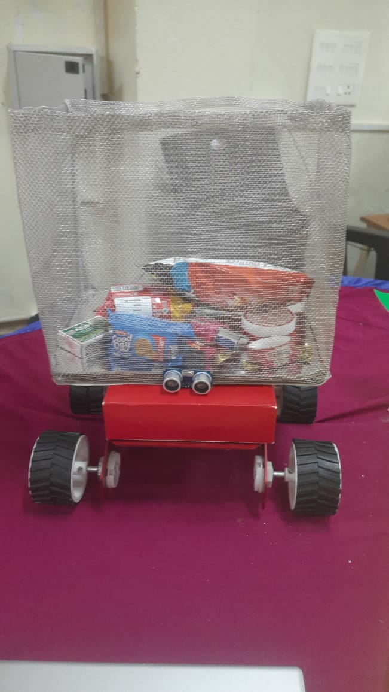

Projects
A glimpse into my work in data, AI, and automation.

AI-Powered Career Guidance System
A machine learning system recommending personalized career paths by analysing skills, interests, and profile data.
- Achieved 88% recommendation accuracy
- Used NLP + vector embeddings
- Implemented KNN & K-Means for predictions
- Created dashboards for insights

Autonomous Shopping Trolley
A robotics project using Python & ROS for navigation, obstacle detection, and automated movement.
- Integrated ultrasonic sensors for sensing
- Improved obstacle detection by 60%
- Navigation tested in 3D environments
- Optimized movement automation